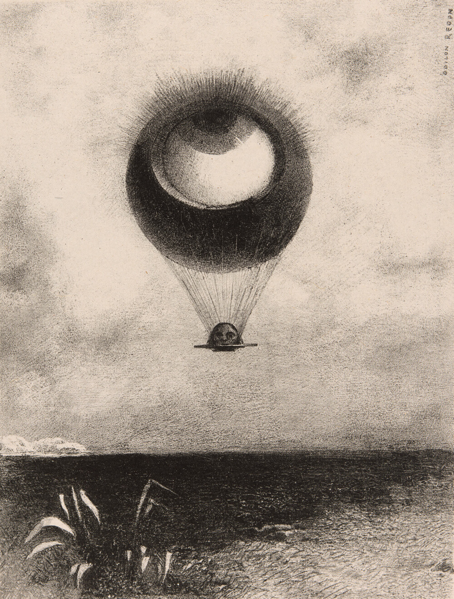
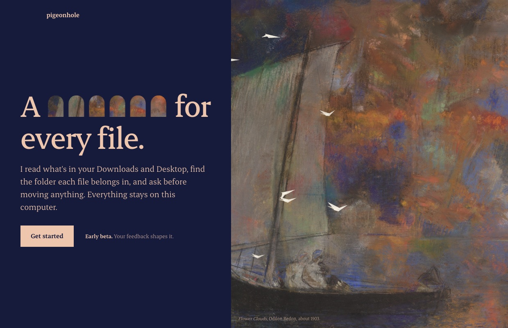
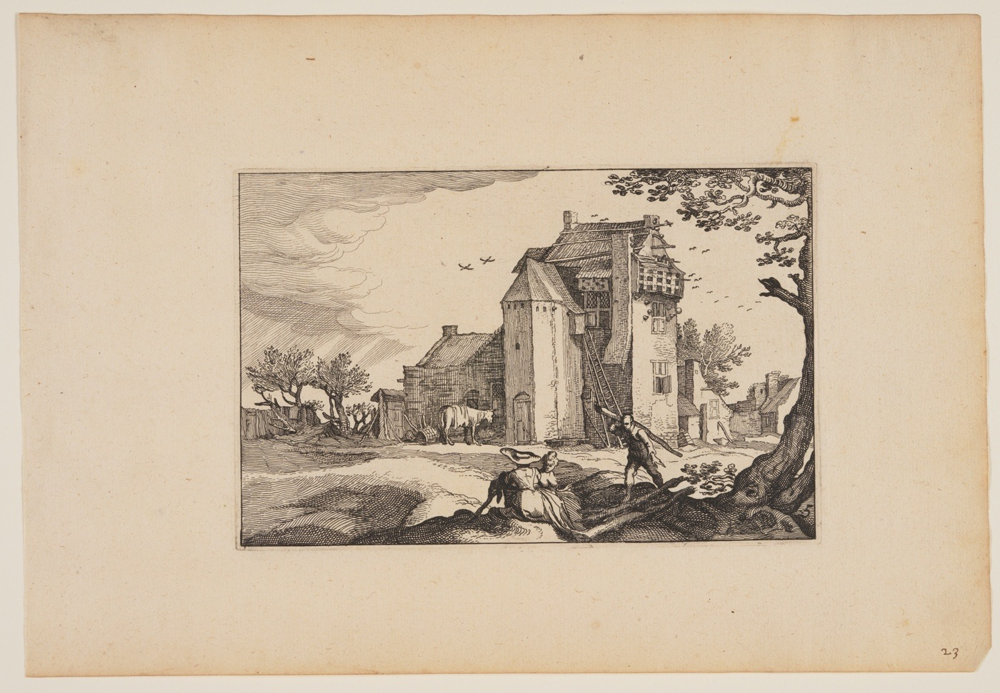

The twelve files from PigeonHole's own test run. Pick one to see where it goes.
Downloads,
Documents/Contracts
- Brightline_offer_letter_signed.docxcontent 0.64
Documents/Finance
- Invoice-2026-0412.pdfcontent 0.65
Documents/Learning
- lecture-07-notes.mdcontent 0.61
Documents/Personal
- booking-confirmation.htmlcontent 0.59
Documents/Work
- standup notes.txtcontent 0.75
Downloads/Installers
- LM-Studio-0.4.26-arm64.dmgrule
Pictures/Design
- The Beach.heicpicture 0.92
Pictures/Photos
- Big Sur Coastline.heicpicture 0.86
- IMG_4107.heicpicture 0.82
Pictures/Screenshots
- Screenshot 2026-10-18 at 12.01.44.pngrule
Left where they are
- IMG_4021.heicPhotos? 0.41
- Radial Blue.heic0.35
Nothing has moved yet.
PDFs, Word files, slides and notes are read for what they say by BGE small, a compact text model, then matched with the folders you described.
Reads your documents
CLIP, a small vision model from OpenAI, looks at each photo and moves it only when it is at least half sure. The Big Sur coast went to Photos at 0.86.
Sees your pictures
IMG_4021.heic scored 0.41 for Photos, under the bar, so it stayed in Downloads with its best guess shown. A chat model on your own machine can take a second look, if you want one.
Leaves the unsure ones
Installers go to Installers and screenshots to Screenshots without any AI. Add your own rules by file type or name.
Rules go first
Ask for “the lease I signed in March”, “a photo of the beach” or “the call about pricing”. Documents, pictures, recordings and videos are searched by what they say, show and sound like. EmbeddingGemma 2 listens to the audio, on your Mac.
Finds anything you describe
First, describe your folders.
In plain words, in pigeonhole.yaml. A few concrete examples help more than one abstract word.
# pigeonhole.yaml
sources:
- Downloads
- Desktop
folders:
- path: Documents/Contracts
description: contracts, offer letters, NDAs,
leases and signed documents
- path: Documents/Finance
description: invoices, receipts, bank
statements, tax forms and bills
- path: Pictures/Photos
description: photos of people, pets,
animals, places, nature and trips$ make plan
Reading 12 files in Downloads, Desktop...
10 files to move
Brightline_offer_letter_signed.docx
to Documents/Contracts content 0.64
Invoice-2026-0412.pdf
to Documents/Finance content 0.65
LM-Studio-0.4.26-arm64.dmg
to Downloads/Installers rule: installers
and 7 more
2 files left where they are
IMG_4021.heic best guess Photos 0.41
Nothing has moved yet.$ make apply
Move these 10 files? [y/N] y
Moved 10 files. Run undo to put them back.$ make undo
Put back 10 of 10 files from the 20261018-202749 apply.
The folders it made are gone again.Nothing moves
until you say yes.

Safety
- Planreads onlyread-only mount
- Applythe plan you sawonce
- Undoevery file backone command
- Overwritesneverreceipt (1).pdf
- Hidden filesleft alonealways
- Downloads in progressleft aloneunder 2 minutes old
- Keys, certificatesleft alone.pem .key .p12
- Code projects, appskept whole.git .app
- Your filesstay on your computer0 bytes uploaded
- Text modelBGE small, on your processor65 MB, once
- Picture modelCLIP ViT-B/32, for pictures and video frames580 MB, once
- Sound modelEmbeddingGemma 2, for recordings and videos690 MB, only if you have them
- Second opinionany chat model, optionalLM Studio or Ollama
Give your Downloads a home.
PigeonHole is a free app for your Mac. Install it like any other app; it walks you through the rest.
- Download itPigeonHole for Mac, for Apple Silicon. About 190 MB.
- Drag it into ApplicationsOpen the file you downloaded and drag PigeonHole onto the Applications folder.
- Open itThe first time, macOS asks you to confirm: System Settings, Privacy & Security, Open Anyway. This beta isn't signed with an Apple certificate yet.
On Windows or Linux, or happier in a terminal? Run it with Docker.

- MIT licence
- A Mac app, in beta
- Since 2026

PigeonHole takes its name from the dovecote. Before the word meant a slot in a writing desk or a post office sorting frame, a PigeonHole was a nesting hole, one for every bird, and each bird flew home to its own. This one is for files. It is a free Mac app, open source under the MIT licence, and was made in 2026 by Seymur Mammadov.The paintings and prints on this page are public domain, from the Art Institute of Chicago. The drop capital is Farmhouse with Dovecotes by Claes Jansz. Visscher, 1620.